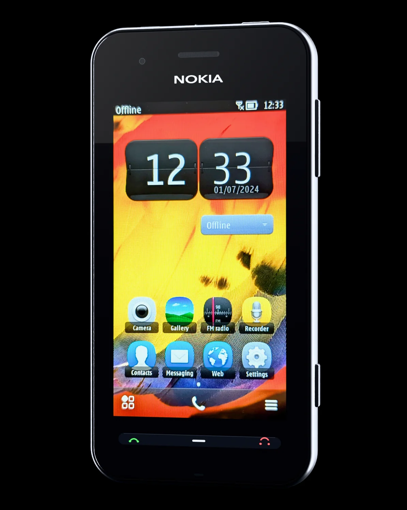
Nokia 603
Мал, да удал.
3,5″ ClearBlack · NFC · 1 ГГц · 5 Мп · Nokia Belle
Коротко о главном.
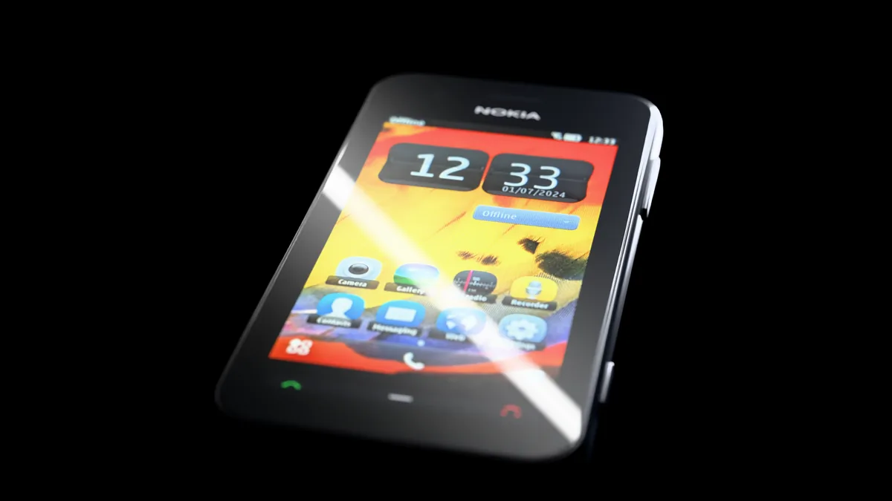
ClearBlack. Чёрный остаётся чёрным — даже под прямым солнцем.
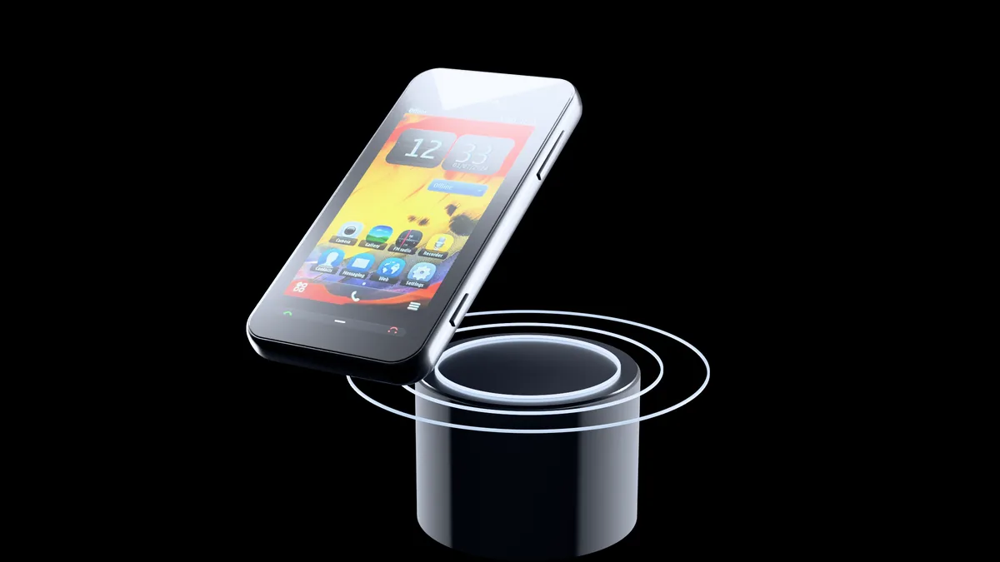
NFC. Приложили к колонке — и музыка уже играет.
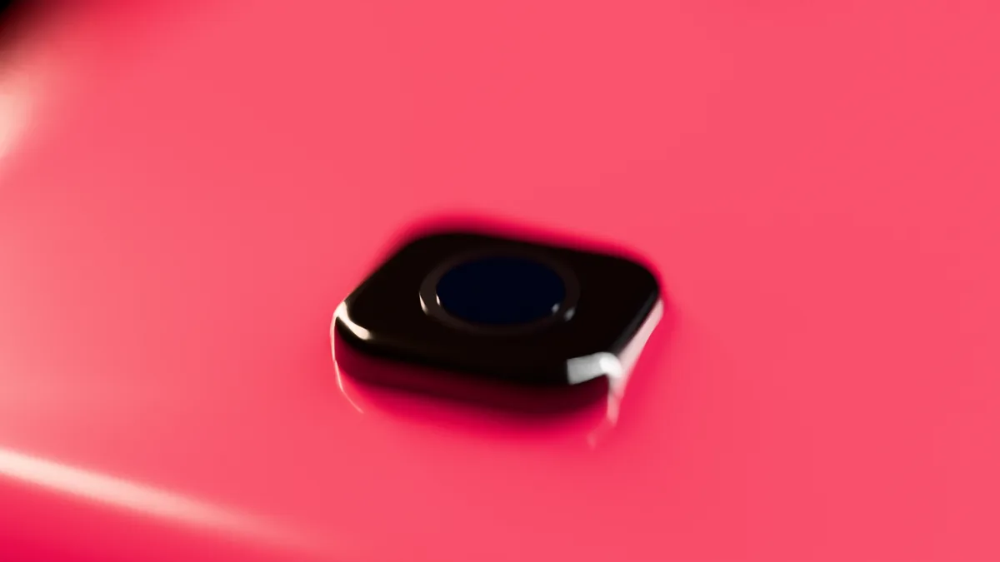
5 Мп и видео 720p. Фокус не нужно ждать — снимок готов сразу.
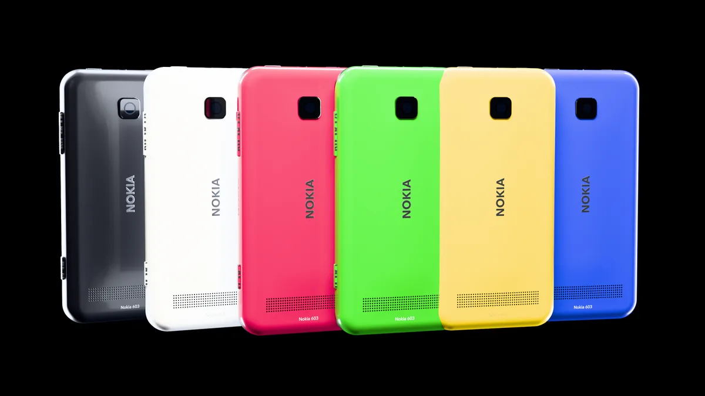
Шесть цветов. Сменили панель — и у вас новый телефон.
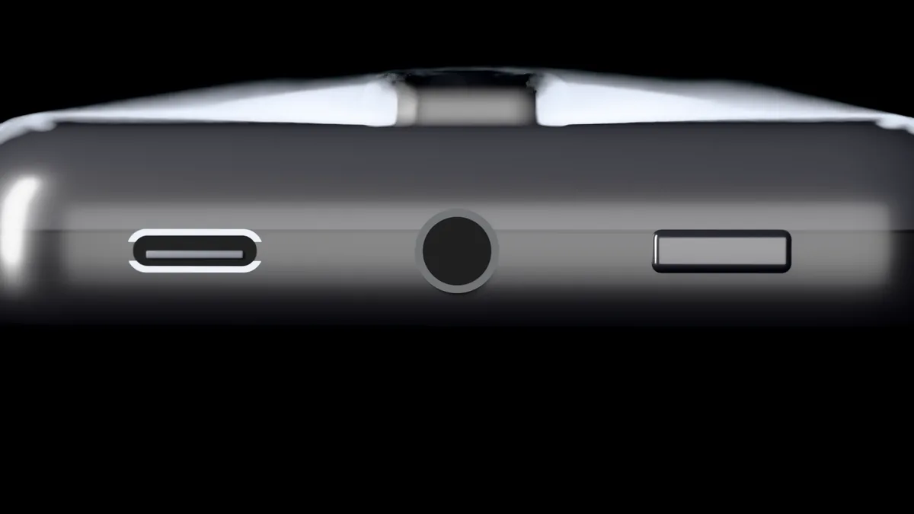
Разъём 3,5 мм. Любые проводные наушники. Без переходников.
Дизайн
Ложится в ладонь.
И в любой карман.
113,5 мм в высоту, 12,7 мм в толщину и всего 109,6 г. Мягко скруглённая спинка удобно лежит в руке, а до любого угла 3,5‑дюймового экрана дотягивается большой палец — без второй руки.
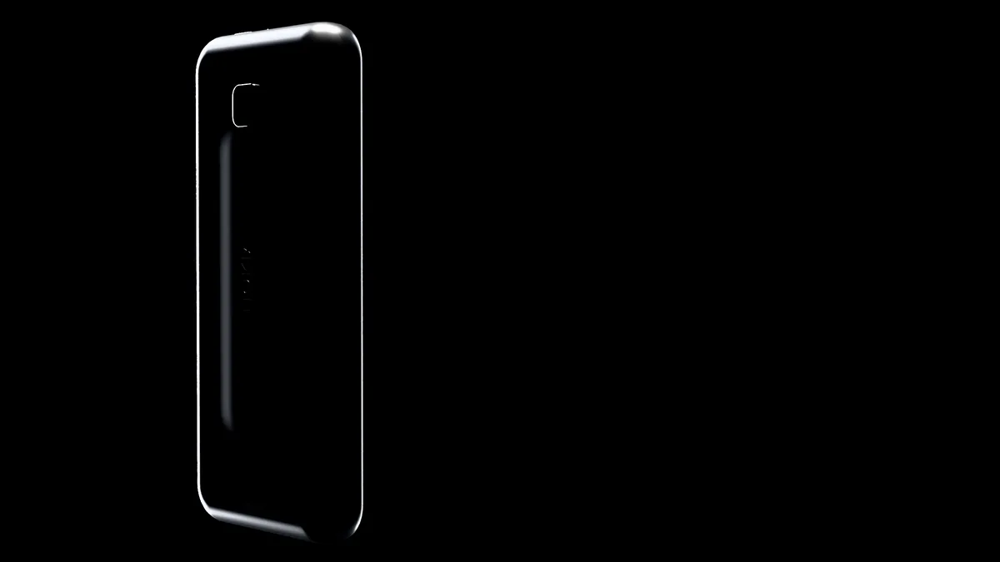
12,7 мм. Изгиб спинки
повторяет ладонь.
Вес вместе с аккумулятором. Легче большинства современных смартфонов почти вдвое.
Ширина корпуса — удобно держать одной рукой, не перехватывая.
Объём всего телефона. Помещается даже в маленький карман джинсов.
Экран
Чёрный — значит чёрный.
Технология Nokia ClearBlack гасит отражения внутри экрана, поэтому чёрный остаётся глубоким, а картинка — контрастной даже на улице. Ёмкостный мультитач и закалённое стекло, устойчивое к царапинам.
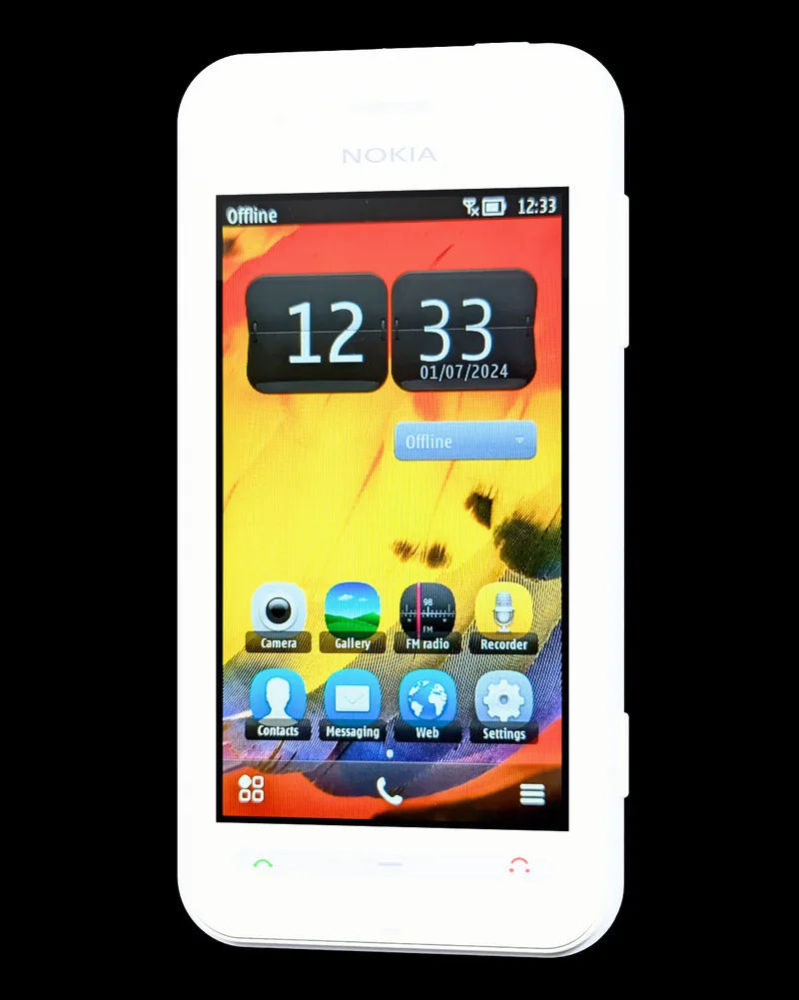
Диагональ. Ёмкостный мультитач — масштаб двумя пальцами, как вы привыкли.
Разрешение nHD, 16,7 млн цветов и около 210 точек на дюйм.
Меньше бликов, глубже чёрный, лучше видно на солнце.
Закалённое и устойчивое к царапинам — ключи в кармане не страшны.
Производительность
1 ГГц. Всё летает.
Процессор 1 ГГц, отдельный графический чип и 512 МБ оперативной памяти — вчетверо больше, чем у Nokia 5230 и 5800. Nokia Belle держит запущенные приложения в памяти и переключается между ними мгновенно.
И графический чип Broadcom с поддержкой OpenGL ES 2.0: плавная анимация рабочих столов, 3D-игры и HD-видео без рывков.
Оперативной памяти. Вдвое больше, чем у Nokia N8 и C6-01.
Рабочих столов с живыми виджетами: часы, календарь, музыка, профили.
Последняя официальная версия системы — Feature Pack 2. Шторка уведомлений и живые виджеты на каждом экране.
Dolby Headphone — объёмный звук в любых проводных наушниках.
Камера и связь
Снимает. Слушает. Находит.
Фиксированный фокус от 50 см до бесконечности: снимок готов сразу, без ожидания автофокуса.
HD-видео со стабилизацией, распознавание лиц и геотеги для каждого кадра.
Сопряжение с колонками и гарнитурами одним касанием, обмен фото с другими телефонами Nokia.
Wi‑Fi 802.11 b/g/n, Bluetooth 3.0 и HSDPA до 14,4 Мбит/с.
Классика
Всё, что потом убрали из смартфонов. Здесь — на месте.
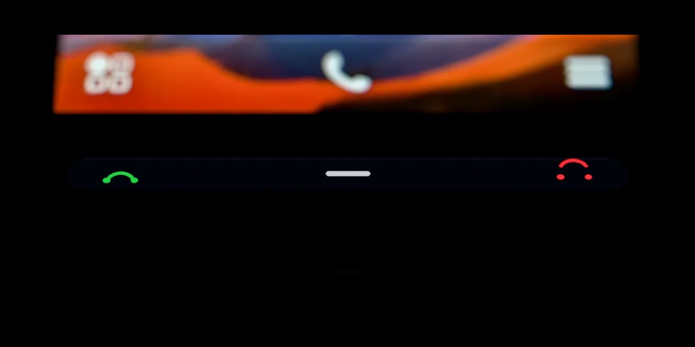
Кнопки вызова. Зелёная — ответить, красная — сбросить. Без свайпов.
BP‑3L на 1300 мА·ч меняется за десять секунд. До 540 часов в режиме ожидания.2
Любые проводные наушники и колонки. Без переходников и без их зарядки.
Работает без интернета и трафика. Антенна — это ваши наушники.
Тысячи треков и фото. Без облаков и подписок — просто вставьте карту.
Цвета
Шесть панелей. Одна защёлка.
Корпус — чёрный или белый. Задние панели меняются за секунды: чёрная, белая, фуксия, зелёная, жёлтая и синяя.
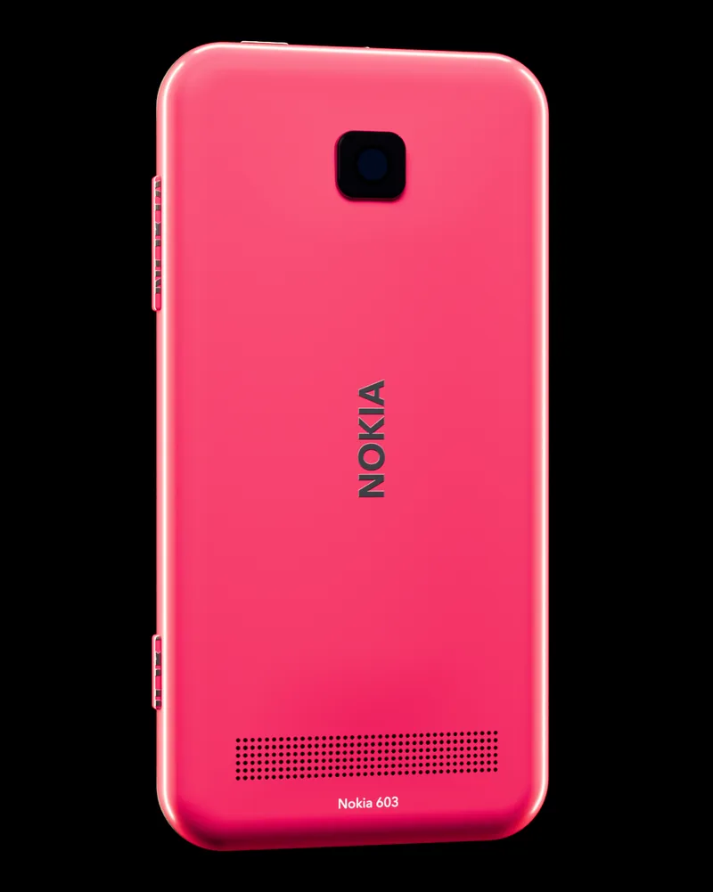
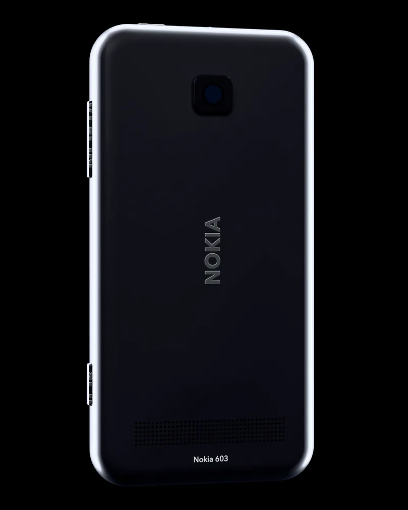
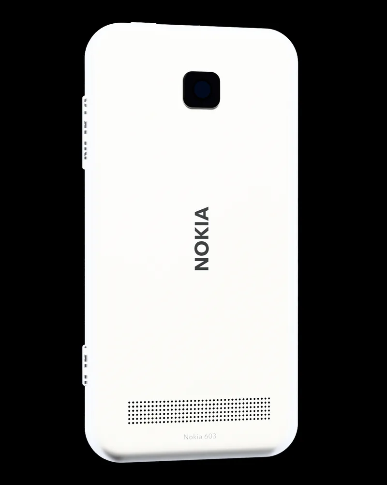
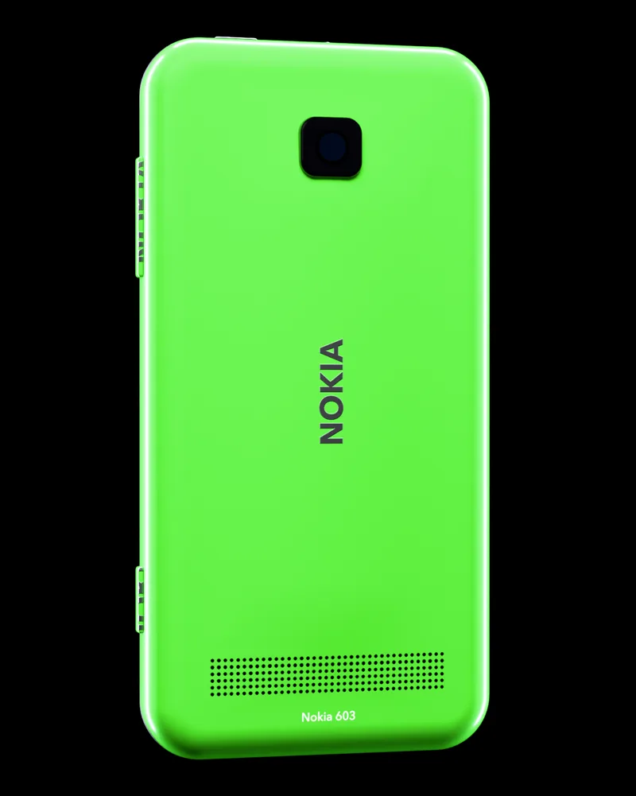
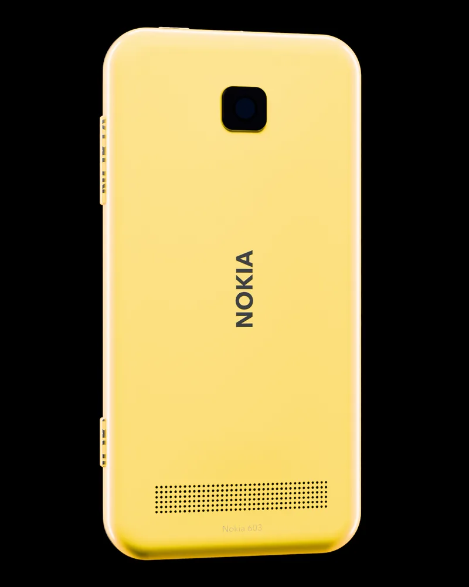
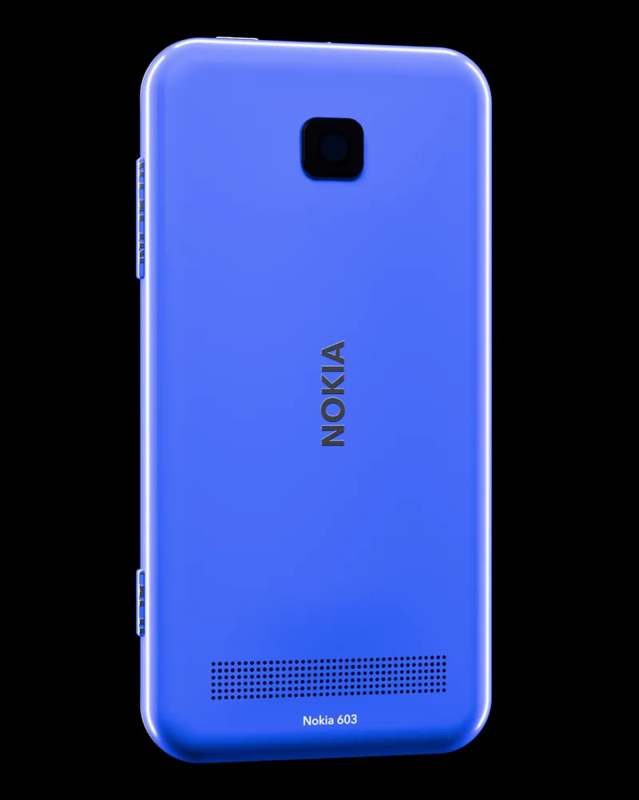
Фуксия
Одна панель — в комплекте, на ваш выбор. Дополнительные — 349 ₴ за штуку. Меняются без инструментов: поддели ногтем у правого края — и готово.
Выбрать цвет при покупкеСравните со своим телефоном.
Сравнение по официальным спецификациям Nokia. Для «смартфона 2026 года» — типичные параметры флагманов.
Комплектация
Что в коробке.
- Nokia 603Корпус и панель выбранного цвета
- Аккумулятор BP‑3L1300 мА·ч, съёмный
- Зарядное устройство AC‑10С разъёмом micro‑USB
- Кабель CA‑179USB — micro‑USB, для зарядки и данных
- Стереогарнитура WH‑207Разъём 3,5 мм, с микрофоном
- Карточка NFC и руководствоКраткая инструкция на бумаге
Полная заводская комплектация — у новых аппаратов. Восстановленные поставляются с аккумулятором, зарядным устройством и кабелем.
Покупка
Почему стоит купить у нас.
Бесплатная доставка
Новой Почтой по всей Украине — в отделение, почтомат или курьером.
Гарантия 12 месяцев
На каждый аппарат — новый или восстановленный. Продлевается до 24 месяцев.
14 дней на возврат
Не подошёл — вернём деньги. Без объяснений.
Оплата частями
До 6 платежей без переплаты — от 500 ₴ в месяц.1
Проверка при получении
Включите телефон прямо в отделении — и только потом платите.
Живая поддержка
Поможем перенести контакты, настроить почту и подобрать карту памяти.
Вопросы
Честно о Nokia 603 в 2026 году.
Будут ли работать WhatsApp, Telegram и Viber?
Нет. Современные мессенджеры давно не выпускают версии для Symbian. Звонки, SMS, MMS, камера, музыка, FM-радио и Bluetooth работают как положено.
Есть ли 4G?
Нет. Телефон работает в 2G (GSM 850/900/1800/1900) и 3G (WCDMA, HSDPA до 14,4 Мбит/с). Для звонков и SMS этого достаточно; перед покупкой уточните у своего оператора, где в вашем городе есть 3G.
Откроются ли современные сайты?
Большинство — нет: встроенный браузер не поддерживает современные протоколы шифрования. Wi‑Fi 802.11 b/g/n есть, но рассчитывать на Nokia 603 как на устройство для интернета не стоит.
Сколько держит аккумулятор?
По данным Nokia: до 8,7 ч разговора в 2G и до 6,5 ч в 3G, до 540 ч в режиме ожидания и до 68 ч воспроизведения музыки.2 Аккумулятор BP‑3L съёмный — запасной можно купить вместе с телефоном.
Какая нужна SIM-карта и чем заряжать?
Нужна micro-SIM. Заряжается через micro‑USB — подойдёт любое зарядное устройство с таким разъёмом.
Работает ли NFC? Можно ли платить телефоном?
NFC работает для сопряжения с колонками и гарнитурами одним касанием и для обмена фото и контактами с другими NFC-телефонами Nokia. Бесконтактная оплата не поддерживается.
Чем новый отличается от восстановленного?
Новый — это аппарат из складских остатков в заводской упаковке с полной комплектацией. Восстановленный проходит диагностику, получает новый аккумулятор и корпусные детали при необходимости; внешне — как новый. Гарантия 12 месяцев — на оба варианта.